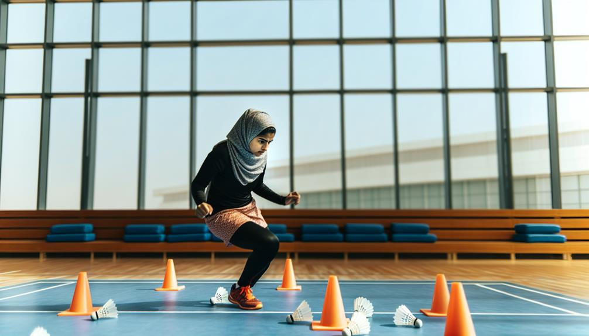

Boosting your tennis skills by means of personal lessons in Dubai is a superb technique to achieve your personal purposes, whether you are a beginner looking for to find the fundamentals or an advanced gamer intending to improve your techniques. The city flaunts a choice of premium badminton academies that use personalized mentoring personalized to particular demands, seeing to it that players receive the focused interest needed for considerable renovation. Individual tennis lessons offer an appropriate setting for gamers to job carefully with seasoned trains that can analyze their strength and weak points, develop customized training plans, and straight them via particular drills and strategies.One of the standout selections for individual tennis lessons in Dubai is the Expert Sports Academy (PSA). Established as one of the earliest badminton training organizations in the area, PSA has created an online track record for quality in training. Their exclusive training program is designed for players of any ages and ability levels, enabling individuals to take part in extensive training customized to their distinctive goals. The advantage of having teachers concerned your selected area within Dubai removes the hassle of taking a trip, making it much easier for frantic experts and homes to integrate training right into their timetables. With a functional strategy, gamers can set up sessions at their convenience, making sure that they get consistent mentoring without disrupting their daily routines.At PSA, the emphasis hops on offering customized focus throughout each session. Trainers job really carefully with gamers to acknowledge certain locations for restoration, whether it’s improving maneuvering, refining shot methods, or creating strategic gameplay. This personalized technique not simply increases skill growth yet likewise cultivates a much deeper understanding of the computer game. The practical environment produced by the instructors inspires gamers to press their limitations while developing positive self-image in their abilities.Another extraordinary option for unique tennis lessons is the Smashing Element Sports Academy (SPSA). Known for its commitment to increasing players games via. with organized training programs, SPSA supplies customized coaching that straightens with each player objectives. The academy employs accredited trains with comprehensive experience in budget friendly tennis, ensuring that students obtain excellent direction.
SPSA anxieties the significance of tactical and technical abilities, aiding gamers develop a well-rounded video game. Exclusive lessons at SPSA can be tailored to concentrate on particular facets of play, such as shot placement, defensive techniques, or match preparation.For those trying to find an extra social finding out experience, Pursueit offers unique tennis lessons that allow gamers to welcome buddies at& a minimized cost. This typical discovering technique cultivates camaraderie and positive competitors while still offering tailored mentoring. Pursueit trains are knowledgeable at developing fascinating sessions that maintain gamers established and fired up regarding boosting their abilities. Additionally, Pursueit gives versatile organizing choices, making it really simple for individuals to locate sensible times for lessons.The Star Tennis Academy additionally offers remarkable personal training possibilities for gamers seeking tailored focus. Established lately yet swiftly obtaining charm, this academy focuses on developing an enjoyable and pleasant environment where players can thrive. The licensed teachers at Star Tennis Academy are fully commited to helping students enhance their capacities with personalized lessons that take care of specific weak points and improve strength. With routine analyses and progression tracking supplied online, students can see concrete enhancements over time.For those interested in premium centers incorporated with professional training, Danube Sports Globe offers a superb indoor area equipped with professional-grade tennis courts. Their individual coaching sessions are made to maximize player capacity while making use of superb solutions. Instructors at Danube Sports Globe concentrate on both technological capabilities and physical fitness, ensuring that players obtain detailed training that improves general efficiency on the court.In enhancement to these academies, several neighborhood recreation facility and sporting activities clubs throughout Dubai likewise give special tennis lessons led by experienced fitness instructors. These locations typically supply a much more informal configuration where gamers can value the sporting task while obtaining high quality standard customized to their capacity level.The advantages of personal tennis lessons prolong past merely skill improvement; they additionally cultivate a feeling of duty and inspiration amongst players. Working very closely with a train enables people to develop information purposes and track their progression with time. This arranged method not only enhances efficiency yet furthermore instills technique and dedication top qualities vital for success in any type of sport.Moreover, exclusive lessons offer an opportunity for players to take part in targeted physical fitness training together with ability development. Lots of fitness instructors include conditioning exercises into their sessions, concentrating on dexterity, stamina, and endurance necessary components required for mastering badminton. This 100% natural technique makes sure that players not just improve their technical abilities yet furthermore improve their overall sporting activities performance.In final thought, elevating your video game with unique tennis lessons in Dubai is an effective ways to achieve your goals as a gamer. With different trustworthy academies like Expert Sports Academy, Shattering Element Sports Academy, Pursueit, Celebrity Tennis Academy, and Danube Sports Globe providing personalized coaching programs made specifically for details demands, intending professional athletes have enough chances to develop their capabilities correctly.The mix of personalized direction, flexible arranging selections, high-grade centers, and expert mentoring creates an ideal setting for development and improvement in this lively showing off activity. Whether you're just starting out or wanting to take your video game to new elevations, exclusive tennis lessons in Dubai will certainly offer you with the gadgets vital for success on the court while promoting a resilient love for the video game.
Choosing special tennis mentoring in Dubai offers a myriad of advantages that accommodate gamers of all ability degrees, from novices to ingenious professional athletes. The tailored focus and tailored training programs supplied with personal mentoring can considerably improve a gamer's effectiveness, making it an appealing option for those serious regarding improving their game. Among one of the most compelling variables to opt for personal mentoring is the accessibility to specialist instructors who possess substantial experience and comprehending of the sport. These instructors often have impressive credentials, having completed at high levels themselves or having in fact undergone extensive training and certification procedures. This know-how converts right into state-of-the-art standard that concentrates on developing both technological abilities and tactical gameplay.Private training allows for a really individualized training experience. Unlike team lessons, where the train interest is divided amongst multiple gamers, private sessions supply individually interaction. This recommends that the fitness instructor can emphasis totally on the exclusive staminas and weaknesses, providing targeted feedback and assistance. As an example, if a player deal with their navigating or fired precision, the fitness instructor can create certain drills and workouts to take care of these troubles directly. This level of personalization makes certain that players make much faster development contrasted to regular team setups, where the rate may not correct the alignment of with their individual discovering curves.Another considerable advantage of private tennis training is the adaptability it uses in concerns to scheduling. Numerous players in Dubai lead active lives, juggling task dedications, family members responsibilities, and numerous other activities. Exclusive training sessions can be prepared occasionally that are problem-free for the player, enabling them to incorporate training perfectly right into their routines. This versatility not only makes it a lot easier for grownups to commit to regular approach nonetheless furthermore help maintain inspiration and consistency in training.The environment in which personal mentoring happens is likewise a vital element. Great deals of gamers locate that they perform much better in a much less jampacked configuration where they can focus without interruptions. Individual coaching usually takes place in fully commited interior courts that supply ideal enjoying issues regulated temperature level degrees, top notch flooring covering, and specialist lights all adding to a phenomenal training experience. This atmosphere allows gamers to concentrate absolutely on their capabilities without the disruptions generally discovered in larger team classes.Moreover, unique mentoring cultivates a much deeper coach-player partnership. This link can boost motivation and responsibility, as players really feel a lot more bought their advancement when functioning really closely with an instructor who comprehends their individual purposes and ambitions. Instructors can personalize their inspirational approaches to fit each gamer personality, making sure that they remain engaged and delighted concerning their training sessions. This customized method not simply aids in skill advancement nonetheless also constructs self-confidence as gamers see substantial improvements over time.In addition to technical capabilities, special tennis mentoring areas significant emphasis on physical conditioning and mental stamina. Trains normally integrate health and fitness training into their sessions, focusing on boosting cardio endurance, durability, mastery, and adaptability essential qualities needed for mastering badminton. By attending to these physical aspects, gamers become much more flexible professional athletes reliable in contending at higher levels.Mental durability is an additional vital part of effective tennis play. Special coaches instruct approaches to manage stress and anxiety throughout suits, keep emphasis under tension, and develop a positive frame of mind that improves efficiency. These psychological abilities are vital throughout cost effective play when the threats are high and gamers have to make quick choices while under pressure.The chance for economical play is in addition boosted through unique mentoring. A number of trainers deal insights right into tournament preparation and match techniques that are customized specifically for each gamer sturdiness. Gamers can take part in simulated match circumstances throughout session, permitting them to apply what they've learned in real-time situations. This prep job aids build confidence when facing challengers in real competitions.Furthermore, personal mentoring offers an impressive platform for social interaction amongst players that may select to share lessons with friends or family members. This shared learning experience not simply makes training more fascinating however furthermore advertises camaraderie amongst individuals.
Engaging with others that share similar interests creates an encouraging location that motivates constant engagement and improvement.Another considerable component of personal tennis training is the ability to set certain objectives and track advancement successfully. Fitness instructors function very carefully with players to establish short-lived and lasting objectives based upon particular goals---- whether it's mastering a particular shot, improving overall health and wellness degrees, or getting ready for a forthcoming event. Typical examinations authorization both the player and trainer to testimonial progression towards these goals, making essential adjustments to training strategies as needed.Additionally, individual mentoring can be especially valuable for those that may actually feel discouraged by group setups or are new to the sporting activity. The individually nature of private lessons establishes a comfy establishing where individuals can discover at their very own price without really feeling anxious regarding their capacity degree. This encouraging atmosphere urges experimentation and development without fear of judgment.In judgment, selecting personal badminton mentoring in Dubai offers numerous benefits that supply especially to exclusive requirements and purposes. With accessibility to expert fitness instructors that offer customized passion and adaptable organizing selections, gamers can experience accelerated ability improvement in an optimal training ambience. The focus on fitness, psychological strength, cost effective prep job, and objective keeping an eye on far better increases the general experience of personal training. Whether you are wishing to boost your game for leisure complete satisfaction or going for cost effective success, getting personal tennis mentoring can be a transformative action in the direction of obtaining your full ability in this fantastic sport. Invite this opportunity to raise your abilities on the court while valuing the lots of benefits that included customized training!
Personalized Training: The Advantages of Special Tennis Lessons in Dubai
Picking unique tennis lessons in Dubai materials many advantages that can substantially increase a gamer’s skills, physical fitness, and basic satisfaction of the sport. Custom-made training has actually ended up being gradually chosen amongst both newbies and knowledgeable gamers, as it enables a customized technique to discovering that addresses certain requirements and purposes. This customized strategy not just speeds up ability advancement however also cultivates a much deeper understanding of the game, making it a distinctive choice for any person major concerning improving their badminton performance.One of the main advantages of individual badminton lessons is the accessibility to specialist trains that supply customized attention. In an one-on-one setting, teachers can focus solely on a player's unique toughness and weaknesses. This customized reactions is vital; it enables players to ’& appropriate mistakes much more efficiently and fine-tune their approaches at a rate that fits them. Unlike group group classes, where the train attention is split among numerous trainees, exclusive lessons guarantee that every minute invested in the court is specialized to the player development. Trainers can develop particular drills and exercises that target locations needing renovation, whether it's footwork, fired precision, or tactical awareness.Moreover, individual lessons permit versatility in scheduling, which is specifically useful for hectic grownups handling task and specific dedications. Gamers can prepare sessions at times that are most hassle-free for them, making sure that training fits completely right into their lives. This flexibility not only makes it simpler to maintain a routine technique routine yet in addition helps reduce stress and anxiety connected with stringent schedules. Whether very early in the early morning or late in the evening, personal training can readjust to personal choices, making it an optimum treatment for those with demanding lifestyles.Another significant benefit of special tennis lessons is the capability to establish information goals customized per gamer aspirations. Whether a person is preparing for a competition an event, meaning to boost their overall health and wellness, or just intending to indulge in the video game a lot even more entirely, individualized training strategies can be developed as required. Trainers conduct detailed examinations at the starting of the training procedure to comprehend each player's existing ability level and desired results. This preliminary assessment develops the framework for creating a concentrated training routine that proceeds as the gamer progresses.The physical benefits of participating in badminton training with individual lessons can not be overstated.
Badminton strategy sessions Dubai - Family training sessions
Beginner-friendly coaching
Professional sports complexes
Shuttlecock
Reflex training
Racket
Tennis is a high-intensity sporting activity that calls for mastery, rate, and endurance. Normal practice under expert assistance aids gamers boost their cardio physical fitness while additionally creating muscle mass stamina throughout numerous muscular tissue mass teams. The vibrant activities involved in badminton such as lunging, leaping, and quick directions adjustments add to improved sychronisation and balance. As gamers take part in targeted conditioning exercises throughout their lessons, they not only progress expert athletes yet also indulge in boosted general health.In enhancement to physical conditioning, mental strength plays a critical duty in badminton efficiency. Private mentoring generally includes emotional training methods focused on enhancing emphasis and peace during suits. Trainers may present techniques such as visualization and mindfulness methods that aid gamers care for anxiety and preserve focus under tension. Creating emotional strength is critical for success in affordable play, and special lessons deal an encouraging setting where professional athletes can work with this vital element of their game.The social aspect of private tennis lessons must not be ignored either. While these sessions are mostly focused on specific advancement, they furthermore offer possibilities for gamers to involve with trains and potentially satisfy various other similar people during group training sessions or competitors arranged by the academy. Building connections within the badminton location can boost inspiration and produce sustaining friendships based upon typical interests.Furthermore, several academies supply additional sources along with unique lessons that enhance the training experience. Ease of access to sophisticated facilities geared up with top quality courts guarantees that gamers can workout in suitable troubles. Some areas also supply fitness places where athletes can deal with durability training particular to tennis, a lot more boosting their efficiency on the court.For those taking into consideration affordable play, personal coaching is particularly beneficial as it prepares gamers for real match circumstances with alternative drills and competitive conditions. Fitness instructors generally integrate match play right into lessons to aid trainees develop tactical thinking skills essential for success versus different challengers. This hands-on experience permits gamers to apply what they've found out in technique directly to budget-friendly settings.Moreover, lots of academies in Dubai host occasions that offer extra possibilities for pupils to display their capabilities in front of a target audience. Participating in these events not simply boosts confidence yet additionally gives useful understandings into locations needing additionally improvement. The experience obtained from completing against others at numerous ability degrees is really useful for any athlete intending to advance their game.In summary, going with special tennis lessons in Dubai offers lots of benefits that cater specifically to specific requirements and objectives. With professional instructors providing tailored instructions, versatile arranging selections suiting energetic lifestyle, and a focus on both physical fitness and psychological durability, these personalized training sessions establish an optimal ambience for development and enhancement. Whether one is a beginner seeking to figure out the basics or a sophisticated player striving for top quality in rivals, tailored training ensures that every element of their game receives the interest it is worthy of. Ultimately, personal training not only enhances technological capabilities yet additionally fosters a deeper love for badminton as players start their journey towards effectiveness of this amazing sporting task.

Top Trainers Using Independently Tennis Directions in Dubai
Dubai has became a popular center for tennis, reeling in gamers of any ages and capability levels. With the broadening allure of the showing off task, many leading teachers in the city deal personalized individually lessons made to help gamers open their prospective and achieve their goals. These specialist trainers bring a wealth of experience, knowledge, and interest for the computer game, making them very useful resources for anyone intending to boost their tennis capacities. Here an evaluation of what you can get out of separately tennis lessons with a few of the leading trains in Dubai. Among one of the most considerable advantages of individually tennis lessons is the customized training experience they deal. Unlike team programs, where rate of interest is split among various gamers, individual sessions allow trains to focus entirely on you. This personalized approach suggests that the teacher can examine your staminas and weak points in real-time and establish a tailored training plan that addresses your particular demands. Throughout these sessions, fitness instructors will certainly review your technique, footwork, shot option, and overall computer game approach. They will certainly supply prompt feedback and renovations, assisting you fine-tune your capabilities better than in a larger group setting. This degree of customized focus speeds up discovering and makes sure that you make tangible advancement in your video game. Dubai is home to several very certified tennis trainers with substantial histories in both having a good time and showing the sporting activity. A lot of these trainers have finished at nationwide or global degrees and have certifications from identified tennis companies. Their experience permits them to existing useful understandings right into innovative techniques and techniques that can raise your video game. These trains regularly use an option of training strategies, consisting of drills focused on details abilities such as using, damaging, or defensive play. They additionally include physical fitness training right into their sessions to increase your dexterity, sturdiness, and endurance important parts for success in badminton. One more advantage of separately lessons is the convenience they supply in scheduling. Trainers are normally going to match your accessibility, making it much easier to fit training sessions right into your hectic method of living. Whether you favor morning sessions or late evening methods, various trains can work around your timetable to warranty you get consistent training without interfering with different other commitments. This adaptability is specifically helpful for working specialists or trainees that might have unpredictable timetables. The ability to magazine lessons at functional times makes it possible for you to preserve a regular training regimen while maintaining various other responsibilities. As you progress with separately lessons with a leading trainer, you'll most likely notification a considerable increase in your confidence on the court. Customized comments assists strengthen favorable habits while dealing with locations for renovation. By consistently exercising under the recommendations of an experienced instructor, you'll become a lot more comfy executing countless shots and approaches throughout matches. This enhanced positive self-image translates not simply right into much better effectiveness nevertheless also boosts your complete pleasure of the sporting activity. As you come to be much more proficient at playing badminton, you'll locate on your own added anxious to participate in suits or tournaments. For players considering competitors, numerous trainers supply pathways to community tournaments or organizations where you can check your abilities versus others. Participating in competitive play is a superb means to use what you've found out throughout training sessions while obtaining useful match experience. Trainers can help prepare you for these competitions by mimicing match scenarios throughout method. They will certainly supply aid on precisely just how to take care of stress circumstances and develop approaches tailored to different oppositions. Whether you're a rookie merely starting out or a skilled gamer seeking to improve your skills further, one-on-one lessons with top coaches in Dubai supply a chance to build a solid foundation in tennis. Trainers will certainly make certain that you acknowledge the principles prior to before taking place to advanced methods. Beginning with strong fundamentals is necessary for long-term success in tennis. By concentrating on correct technique from the beginning, you'll be much much better supplied to proceed swiftly and avoid developing poor behaviors that can impede your efficiency in the future. Participating in separately tennis lessons with leading fitness instructors in Dubai uses an exceptional possibility for personal development and ability improvement within the sporting activity. The customized training experience enables gamers to obtain customized instructions that addresses their special demands while getting from the proficiency of knowledgeable experts. With adaptable arranging options, a focus on ability growth, boosted self-esteem levels, possibilities for affordable play, and a solid foundation improved solid principles, these mentoring sessions are invaluable for any type of private significant concerning improving their game. Whether you're just starting or looking to take your capacities to new heights, investing in one-on-one tennis lessons with a leading train can be a transformative experience that opens your complete opportunity on the court. Invite this chance to increase your tennis journey and value all the benefits that included committed training under professional assistance.
Individual Tennis Lessons in Dubai: Customized to Your Goals
Unique tennis lessons in Dubai provide a special possibility for players to get customized mentoring that aligns with their details purposes and ability degrees. As the sporting activity continues to be to increase in appeal, many grown-ups and children are seeking tailored training sessions that concentrate on personal improvement, making exclusive lessons a gradually appealing choice. The benefits of such customized instructions extend previous just capability improvement; they include advantage, adaptability, and a helpful comprehending environment that promotes growth and confidence.One of the standout attributes of individual tennis lessons is the individualized focus players receive from seasoned instructors. Unlike team courses, where instructions is spread throughout many individuals, private lessons enable concentrated training that addresses each gamer's unique staminas and weaknesses. Instructors have the capability to '' analyze a gamer's method very closely, providing immediate feedbacks and help that can result in quick renovation. This tailored technique warranties that gamers are not simply managing their abilities but in addition developing a much deeper understanding of the game.In enhancement to technical skill improvement, unique lessons offer an opportunity for players to work with certain objectives they desire to accomplish. Whether a player is wishing to boost their serve, boost their footwork, or develop essential gameplay, coaches can style training sessions that target these places straight. This goal-oriented framework help gamers remain inspired and engaged as they see significant development in their efficiency. Additionally, the ability to establish specific goals enables a much more satisfying training experience, as players can commemorate turning points along the way.The versatility utilized by personal badminton lessons is an additional significant benefit. Many developed players have calling for regimens full of work commitments and family members obligations. Unique coaching licenses sessions to be arranged in some cases that match the player's availability, whether early in the morning, throughout lunch breaks, or at nights. This adaptability makes it a lot easier for individuals to incorporate tennis training right into their hectic lives without feeling bewildered or forced by rigid course schedules.Moreover, individual lessons can be carried out at a place of the gamer's option, which adds an additional layer of convenience. Whether at a local sports club, recreation center, or even in your home (if space permits), this flexibility eliminates travel problems and enables gamers to discover environments where they feel most comfy. For those that might actually feel frightened by larger groups or affordable configurations, special lessons use a safe location to find out and grow without the anxiety of executing before others.The social aspect of individual lessons can additionally be boosted by inviting buddies or member of the family to sign up with sessions at a discounted price. This shared learning experience not simply promotes relationship yet in addition presents a component of pleasant rivals that can much better influence individuals. Educating with buddies allows gamers to support each various other's development while delighting in the social advantages of practicing with each various other. This cumulative setting can make finding out more fascinating and less dissuading for newbies or those returning to the showing off task after a hiatus.In concerns to training premium, Dubai is home to several of the finest badminton trainers who bring comprehensive experience and experience to their mentor methods. Numerous fitness instructors have competed at high levels themselves and have certifications from identified badminton companies. Their histories allow them to give understandings not simply right into technical capacities nonetheless also right into psychological techniques important for success in budget-friendly play. Gamers gain from this large range of understanding as they find out simply exactly how to browse matches effectively while maintaining peace under pressure.Another vital element of individual tennis lessons is the focus on physical conditioning along with capability improvement. Trains generally integrate physical fitness elements right into training sessions that increase general athleticism and endurance. This may contain agility drills, toughness training workouts, and versatility routines especially personalized for tennis gamers. By enhancing physical fitness along with technical skills, players can enhance their performance on the court significantly.Furthermore, a number of training programs stress the worth of psychological toughness in tennis. Personal lessons commonly consist of discussions worrying suit prep work methods and emotional techniques for keeping focus throughout gameplay. Instructors take care of gamers on visualization methods, goal-setting strategies, and dealing devices for managing stress and stress and anxiety throughout affordable circumstances. Creating psychological strength is crucial for professional athletes meaning to carry out at greater degrees and can make a considerable difference in suit outcomes.For more youthful players or those new to tennis, exclusive lessons supply an outstanding intro to the sport in a less daunting setup. Trains can produce interesting and age-appropriate training sessions that concentrate on framework foundational skills while instilling a love for the game. By growing a favorable discovering atmosphere where young expert athletes feel sustained and encouraged, individual training lays the groundwork for long-lasting involvement in badminton.In conclusion, personal tennis lessons in Dubai provide a customized technique to capacity advancement that caters particularly to individual goals and selections. With tailored rate of interest from professional coaches, versatile organizing choices, convenient location options, and opportunities for social involvement with shared understanding experiences, these lessons supply an improving atmosphere for both newbies and advanced gamers alike. The combination of technical skill enhancement, physical fitness, mental resilience training, and ambitious standard makes individual coaching a vital financial investment for any specific wishing to master tennis. Whether you are intending to compete at greater degrees or just appreciate playing recreationally while boosting your abilities, individual tennis lessons are a trustworthy way to accomplish your objectives on the court while getting a kick out of every minute of your journey in this vibrant sporting task.
🸠Elevate your game with #PrivateBadmintonLessonsDubai! Personalized coaching, expert tips, and world-class facilities await you. Perfect for players of all levels to master their skills. 🆠Ready to smash your goals? Check it out! 👇 #BadmintonDubaihttps://t.co/2r18qFWfqI
Adaptable Preparing for Personal Tennis Procedure in Dubai
Situating versatile arranging for special tennis sessions in Dubai can significantly boost your training experience, specifically for active professionals and fans. The vibrant nature of life in Dubai frequently recommends that people have differing commitments, making it essential to have accessibility to training programs that can fit their schedules. Fortunately, numerous tennis academies and coaching facilities in the city recognize this requirement and supply a series of alternatives tailored especially for those that call for flexibility. Among the primary advantages of private badminton sessions is the customized focus gamers obtain from skilled trains. Unlike group classes, personal sessions enable a tailored approach where trainers can focus on an individual particular needs, toughness, and weak points. This tailored training is especially important for gamers intending to fine-tune their capacities or address certain locations of their video game, such as maneuvering, fired accuracy, or tactical understanding. Trainers often make training techniques that correct with the player's goals, whether they aim to total at better degrees or simply improve their home entertainment play. Many tennis academies in Dubai use functional scheduling that permits gamers to publication sessions at times that match their timetable. This versatility is vital for those with needing work routines or various other commitments. Gamers can typically choose from a variety of time ports throughout the week, consisting of morning, late night, and even weekends. Some academies give the alternative to reschedule sessions with very little notice, suitable unexpected modifications in strategies. This flexibility guarantees that gamers can protect constant training without really feeling pressured by stiff timetables. The comfort of area is an additional substantial variable when taking into account unique tennis sessions. A number of mentoring facilities are purposefully located across Dubai, making it easier for gamers to find places near their homes or workplaces. Some academies also provide the alternative for fitness instructors to come to players suched as locations within the city constraints. This eliminates taking a trip time and makes it possible for gamers to maximize their training sessions without the difficulty of taking a trip. Whether at a neighborhood sports facility or a personal court, having available training locations enhances the complete experience.
For those that might plan to share the experience with buddies or relative, great deals of academies allow players to welcome others to sign up with individual sessions at an affordable price. This shared recognizing experience not simply makes training much more satisfying yet additionally cultivates a motivating atmosphere where individuals can inspire each numerous other. Playing together with pals can improve pleasant competition and sociability, making each session an interesting social activity while still concentrating on ability growth. A number of tennis mentoring facilities in Dubai comprehend that dedicating to a lasting program can be intimidating for new gamers. Consequently, they typically use test sessions that permit people to experience personal training prior to making a commitment. These test sessions provide an opportunity to evaluate coaching styles, facilities, and general compatibility without any financial threat. If individuals locate that the training satisfies their expectations and straightens with their goals, they can after that pick a much more organized training plan. Incorporating innovation into training sessions has happened progressively prominent among badminton academies in Dubai. Several trains make use of video evaluation gadgets to offer responses on gamers techniques throughout individual lessons. By videotaping practice or matches, trains can highlight places for improvement and aid players envision their growth with time. This technological assimilation enhances the finding out procedure and enables extra dependable ability growth. Special tennis sessions typically consist of components of physical conditioning customized especially for the needs of the showing off task. Trains may integrate toughness training, dexterity drills, and versatility workouts right into the training routine to make sure that players are not just enhancing their technological abilities yet additionally increasing their basic athleticism. This alternative technique helps in reducing the danger of injury while increasing efficiency on the court. Educating at a badminton academy furthermore opens up doors to area participation opportunities. Several centers host events such as friendly events or celebrations where gamers can fulfill others who share comparable interests. These events cultivate a sense of belonging within the tennis area and supply added inspiration for players to continue boosting their abilities. Safety and security is crucial when participating in any type of kind of sport, especially throughout severe training sessions like badminton. Trustworthy training facilities concentrate on gamer safety and safety by ensuring that centers are well-maintained and provided with with called for safety gear. Fitness instructors are trained in first aid treatments and emergency scenario treatments to settle any sort of injuries that could occur during method or matches. By establishing a secure establishing, gamers can concentrate on sharpening their skills without unneeded diversions or concerns pertaining to their well-being. Flexible organizing for private tennis sessions in Dubai usages many benefits for active individuals wanting to boost their game. With individualized coaching experiences customized to particular demands, useful organizing options that fit various way of livings, quickly accessible locations within the city, cost-effective team finding opportunities, test sessions for risk-free exploration, technological combination in training methods, a concentrate on physical conditioning, community communication chances possibilities, and robust precaution gamers have everything they require to succeed in this vibrant sport. Whether you are merely beginning your journey or seeking to fine-tune your existing abilities a lot more, gaining from these adaptable exclusive training options can cause substantial enhancements on the court while seamlessly appropriate right into your busy life in Dubai. Comfortable this possibility not only increases your efficiency nonetheless in addition makes it possible for you to delight in all the physical and social advantages that include playing tennis at a better degree.
Attain Your Full Prospective with Professional Personal Tennis Training in Dubai
Achieving your complete potential in tennis by means of professional personal training in Dubai can be a game-changing experience, whether you are a newbie intending to discover the basics or an advanced gamer planning to fine-tune your capabilities and total at better levels. The expanding appeal of tennis in the UAE has really caused the center of several academies and mentoring centers that offer individualized training programs customized to individual demands. This personalized approach not just enhances technical capacities yet likewise constructs mental stamina, computed thinking, and health and fitness crucial components for success on the court.One of the primary advantages of private tennis coaching is the tailored focus you get from educated instructors. Unlike team classes, where the fitness instructor's emphasis is split among numerous players, personal sessions permit a more tailored experience. Trainers can check out your sturdiness and weak points, giving particular comments and help that straight addresses your one-of-a-kind having fun style. This customized guideline speeds up learning and aids you get over obstacles much better. Whether you battle with maneuvering, fired selection, or computer game approach, a specialized instructor can develop drills and workouts that target these locations, ensuring you make consistent progress.Moreover, expert trains in Dubai typically bring a riches of experience from different backgrounds, consisting of budget friendly dip into nationwide and worldwide degrees. Several have significant training in sporting tasks scientific research and fitness, enabling them to consist of health and wellness components right into your training routine. This holistic strategy not just boosts your tennis abilities nevertheless additionally boosts your overall athletic efficiency. Trainers can overview you through endurance and conditioning exercises that boost dexterity, speed, and endurance crucial features for understanding badminton.Mental conditioning is an extra vital element of professional mentoring that is frequently neglected. Tennis is as a lot a psychological game as it is a physical one. Teachers can help you develop mental stamina by means of techniques such as visualization, focus exercises, and positive self-talk approaches.
These abilities are essential when experiencing high-pressure circumstances throughout suits or competitors. By collaborating with a trainer that recognizes the psychological demands of the sporting activity, you can grow a mindset that enables you to perform at your finest no matter exterior pressures.The convenience given by special training sessions is particularly appealing for energetic grownups or students with requiring timetables. Various academies provide choices for arranging lessons in some cases that are hassle-free for you, whether early in the early morning or late in the evening. This flexibility guarantees that you can maintain uniformity in your training without contravening different other dedications. On top of that, some instructors might supply on the net sessions or crossbreed designs that integrate in-person training with digital training, even more boosting accessibility.In Dubai, there are various badminton academies that focus on personal mentoring, each offering special programs made to satisfy numerous demands. For example, some academies focus on creating young people skill with structured training paths that stress skill advancement from novice to cutting-edge degrees. Others may provide particularly to grown-ups wishing to boost their recreational play or total in neighborhood organizations. When selecting an academy or train, consider what aligns ideal with your purposes whether it's comprehending the principles or getting ready for budget-friendly tournaments.Another considerable advantage of unique coaching is the possibility for advancement checking and obligation. Instructors frequently execute regular evaluations to display your improvement with time. This organized technique not just aids maintain you passionate yet furthermore supplies clear benchmarks for improvement. Comprehending exactly how far you've come can be remarkably meeting and motivates proceeded effort in your training.The area aspect of tennis mentoring must not be undervalued either. Numerous academies cultivate a feeling of belonging amongst their gamers by arranging parties, events, and friendly suits. While exclusive lessons focus on personal advancement, joining these neighborhood jobs makes it possible for you to use what you've discovered in a practical setting while constructing partnerships with fellow players that share your interest for the sport.In enhancement to skill development and community communication, numerous badminton academies in Dubai offer advanced facilities supplied with modern-day courts and training tools Accessibility to top-notch places improves the overall training experience and authorizations gamers to practice under optimum problems. Some centers likewise include advanced technology such as video clip analysis devices that enable players to evaluation their efficiency throughout practice sessions or suits. This degree of information can supply essential understandings right into areas calling for improvement.When thinking of personal coaching options, it's essential to research study possible trainers extensively. Look for accreditations such as certifications from recognized tennis organizations or experience coaching at economical levels. Reviewing testimonials or recommendations from numerous other gamers can in addition supply understandings into a coach mentor style and effectiveness.In final thought, attaining your total possibility through specialist exclusive tennis mentoring in Dubai is an enhancing journey that incorporates capacity improvement with psychological conditioning and physical fitness. With customized attention from knowledgeable trainers that comprehend the complexities of the showing off activity, you can accelerate your uncovering contour while enjoying the treatment of enhancement. The adaptability of organizing lessons around your method of living makes it much less difficult than ever before to commit to regular training sessions without really feeling confused by various other dedications. As you include with fellow gamers and participate in area jobs arranged by academies, you'll find by yourself immersed in a motivating environment that cultivates advancement both on and off the court. Whether you're going for affordable quality or simply seeking to value badminton at a higher degree, purchasing competent exclusive mentoring will certainly definitely established you on the path in the direction of comprehending your total capability in this vibrant showing off task.